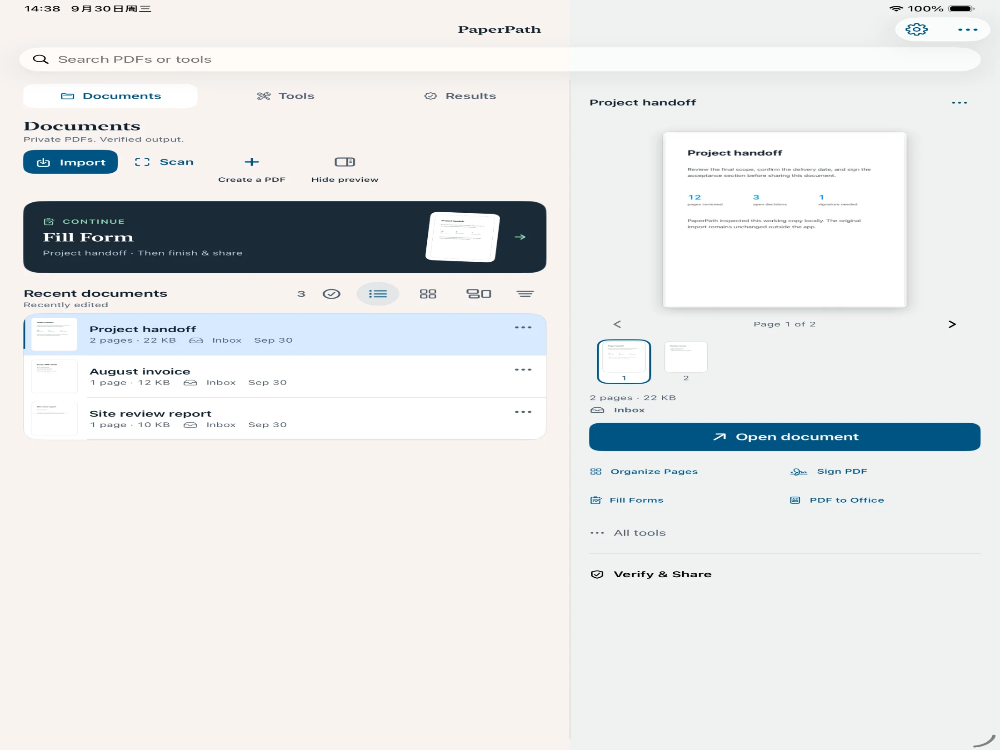
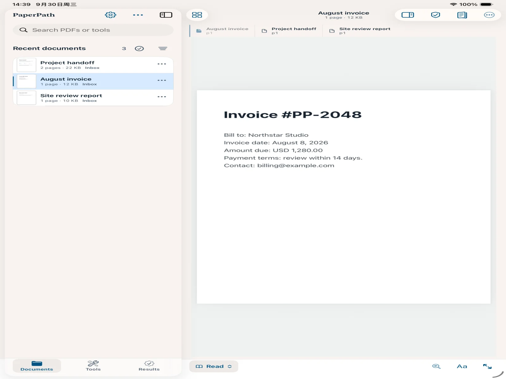
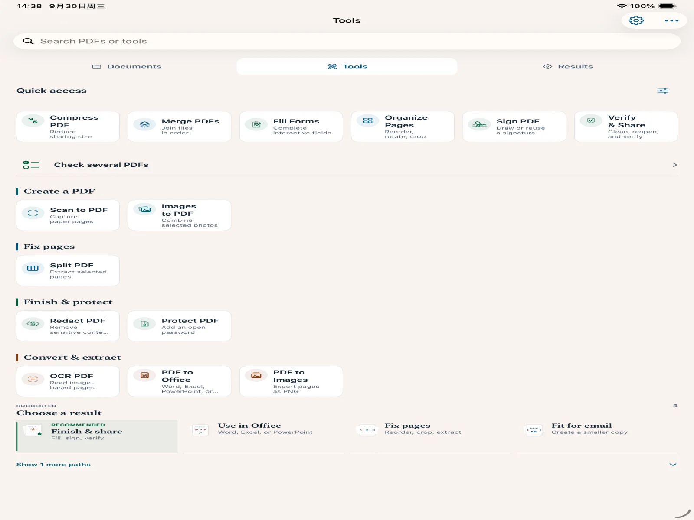

01
仕上げる
入力、署名、注釈
- インタラクティブフォーム
- 手書き署名
- ハイライトと取り消し線
- スタンプと透かし
ひとつのPDFを、
開いてから安心して渡すまで。
スキャン、入力、署名、OCR、整理、変換、墨消しまで、ひとつの場所で完結。iPhoneではすばやく、iPadでは2カラムのワークスペースで作業できます。
iOS 17またはiPadOS 17以降に対応


スキャンとOCR
入力と署名
整理と変換
確認と共有
01 / PRIVACY
PaperPathは対応する機密情報をデバイス上でスキャンし、候補、ページ、検出元を明確に表示します。削除する項目と、黒塗りまたは白抜きの表示方法は自分で選べます。
自動プライバシースキャン
対応するメールアドレス、電話番号、日付、テキスト領域を分類して表示します。処理前に該当するPDFページへ戻って確認できます。
02 / CAPABILITIES
入力、署名、スキャン、認識、整理、保護、変換まで、ひとつの書類フローで完結します。
01
仕上げる
02
作成・認識
03
整理・保護
04
変換・納品
BUILT FOR IPHONE & IPAD
iPhoneは一つの作業に集中できる1カラム構成。iPadは書類一覧、ページ、使用中のツールを同時に見渡せる専用2カラムワークスペースです。



03 / REAL WORKFLOWS
スキャン確認

文字認識

作業を再開

04 / HOW IT WORKS
01
02
03
PRIVACY BY DESIGN
PDF処理、OCR、プライバシー検出はデバイス上で実行されます。PDFの内容、認識テキスト、手書き署名をPaperPathの処理サーバーへ送信しません。
自動プライバシー検出は情報を見落とす場合があります。共有前に書類を確認してください。出力コピーの恒久的な墨消しは元に戻せません。読み込んだ元ファイルは変更されません。
05 / FAQ
PaperPathは対応する種類の機密情報をデバイス上で自動スキャンしますが、確認なしで削除しません。各項目を選び、元のPDFページを確認し、墨消し方法を選んでから最終操作を確定します。
できません。恒久的に墨消ししたコピーから該当内容は復元できないため、実行前に明確な確認画面を表示します。読み込んだ元ファイルは再処理用に保持されます。
主要なPDF処理、OCR、プライバシー検出はデバイス上で実行されます。システム共有先を選んだ場合、または任意のiCloudメタデータ同期を有効にした場合のみ、該当するサービスの範囲へデータが渡ります。
閲覧、フォーム入力、手書き署名、注釈、スキャン、OCR、結合、分割、ページ整理、圧縮、パスワード保護、Office／画像／テキストへの書き出し、Verified Outputの作成に対応します。
PaperPathの継続課金はありません。無料ダウンロードにはVerified Outputを1回含み、買い切りでVerified Outputと一括納品を回数制限なく利用できます。
PAPERPATH FOR IPHONE & IPAD
無料ダウンロード。買い切り。継続課金なし。
App Storeで近日公開